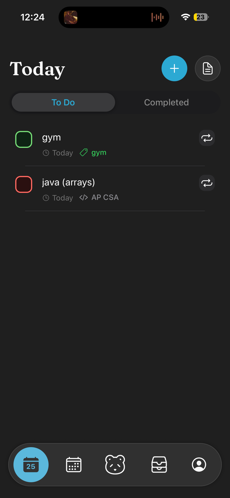
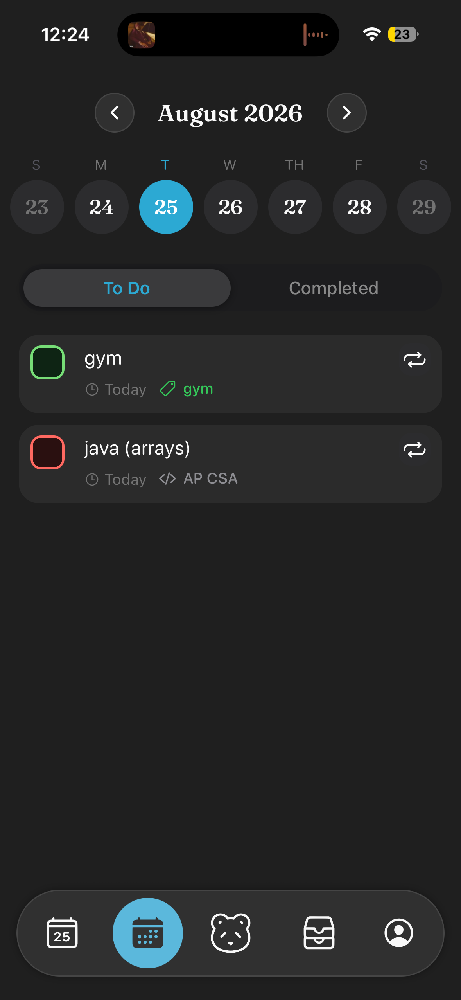
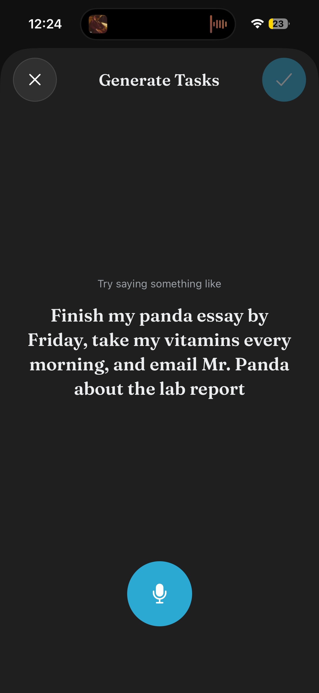
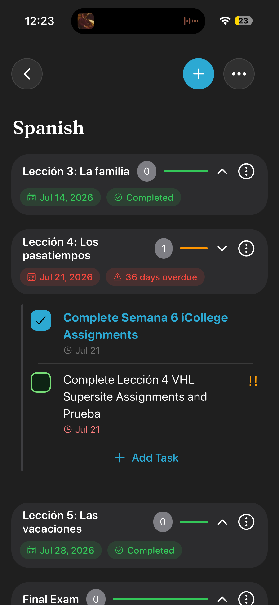
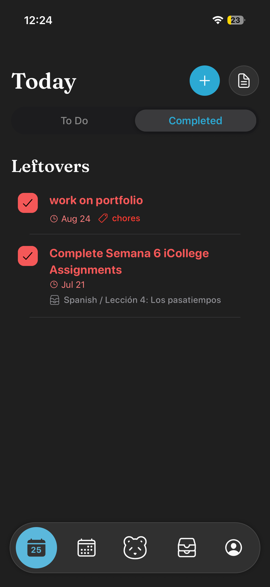
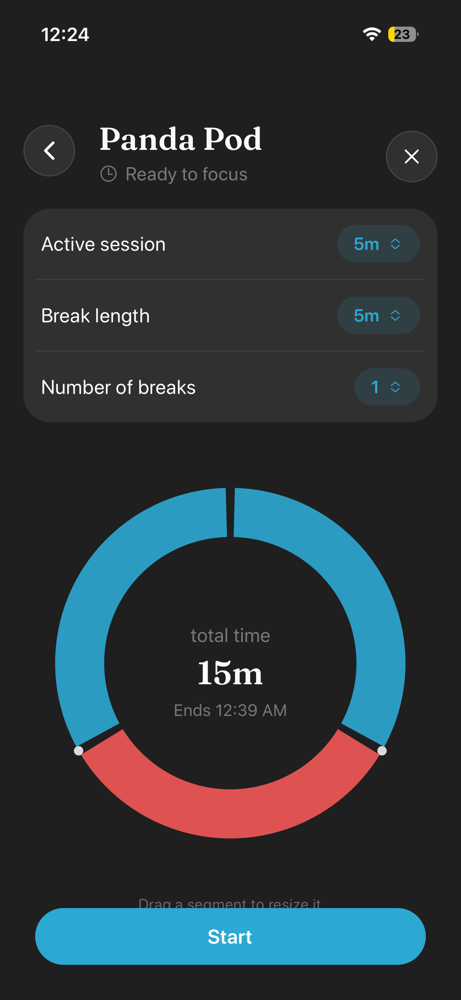

Initially, I started the app to help myself with task management, but
the issue goes way past just me. The app will feature a full tech stack
using AWS for authentication and object storage, while using PostgreSQL
for the database.
Completing tasks is basic, but students need a structured way to complete
their school life without burnout. We help you become more focused on what matters, and realize
what holds you back. Task Panda offers features such as Annoying Meter, Exam Reflection, Syllabus Planner, Ask Panda, and more features centered around
students, and helping them improve their academic life.

This is your today view, in the default mode. It can get complicated, but it'll never be hard to navigate. Modes include kanban, priority, and calendar.

To view upcoming, previous, or hanging exams and deadlines, you navigate here to have the same dynamic view but throughout your calendar.

Why add tasks when you can speak? Shake your phone, use the shortcut, or press the Ask Panda button and talk naturally. Your panda will interperet what you said and create tasks, exams, and in other pages of the app, missions and schedules.

These can be anything you'd like. Projects, long assignments, extracurricular projects, whatever. As long as you have a goal, addSteps, with tasks and watch the planning happen for you.

You should always be able to see your progress, and be proud of yourself. As visible in the screenshot, completed tasks will always show tasks delegated from anywhere in the app.

A good example of one of our student directed features, is Panda Pods. A pomodoro timer with live activites enabled and extra incentives inside the app that integrates data seamlessly with the rest of the app.
Based on research by Kamei and others, JIT defect prediction is an already improved method of safeguarding commits, however committer brings an easier,
faster, and more predictive model to programmers. Judging given values like unit complexity and unit interface values, along with inferencing other
metadata, allows us to properly judge whether a commit is safe or not.
More focused on metadata, it's learned off of many repos to recognize patterns and protect
users' code. It's use case is a VS Code extension where it would provide developers with feedback in their output console
telling them, "This commit isn't safe, or will break XYZ".